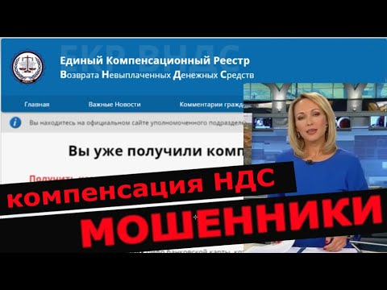

Компенсация НДС при использовании УСН
Продажа: +7 (978) 203-53-43 | smeta@grandsmeta82.ru Поддержка: +7 (978) 202-42-62 | support@grandsmeta82.ru г. Симферополь, ул. Самокиша, 18, оф. 103 Главная Новости Новости ГРАНД-Сметы Изменения в СНБ Новости Ценообразования Интересное в строительстве Прайс-лист ГРАНД-Смета Нормативные базы Обновление Индексы, ценники Литература Знай как! ГРАНД-Смета: база знаний Видеокурс Реформа ЦО Документы Минстроя, Минрегиона и т.д. Поддержка Загрузить
Единый номер технической поддержки ПК "ГРАНД-Смета" (Республика Крым и г. Севастополь): +7 (978) 202-42-62 (ежедневно, с 9:00 до 21:00)
Компенсация НДС при использовании УСН
Для того чтобы рассчитать сумму компенсации НДС при использовании упрощённой системы налогообложения необходимо в окне с параметрами сметы перейти на закладку Лимит. затраты и там добавить статью затрат в главу с названием Налоги и обязательные платежи . В том случае, если статья затрат добавляется вручную, пользователь должен сам указать нужное наименование статьи затрат, а в колонке Значение ввести следующую формулу:
(МАТ+(ЭМ-ЗПМ)+НР*0,1712+СП*0,15+ОБ)*0,20
где 0,1712 (17,12%) – удельный вес затрат на материалы в постатейной структуре накладных расходов согласно МДС 81-33.2004 (для районов Крайнего Севера и местностей, приравненных к ним, требуется применять в формуле значение 0,182 согласно МДС 81-34.2004); 0,15 (15%) – удельный вес затрат на материалы в постатейной структуре сметной прибыли; 0,20 (20%) – ставка НДС.
Нюансы расчета компенсации НДС с индексами к СМР в ПК "ГРАНД-Смета".
Если нет необходимости в том, чтобы в документе отображалась такая громоздкая формула, достаточно включить внизу окна опцию Скрывать формулу в итогах.
Напомним, что значения идентификаторов МАТ, ЭМ, ЗПМ, НР и СП возвращаются в зависимости от того, какой способ расчёта задан в данный момент для локальной сметы – базисно-индексный или ресурсный. При этом следует иметь в виду, что если в смете задан базисно-индексный расчёт ив параметрах сметы на закладке Индексы в группе Индивидуальные индексы для позиций сметы выбран способ применения индексов Применять индексы к СМР (либо установлен переключатель Не использовать индексы ), то значения указанных идентификаторов рассчитываются в базисных ценах.
Предложенная формула реализует методику расчёта, описанную в письме Госстроя России № НЗ-6292/10 от 6 октября 2003 года. Данный документ есть в базе данных информационно-справочной системы «ГРАНД-СтройИнфо» в разделе Руководящие документы – Акты Минрегионразвития – Письма .
Обратите внимание! В примере расчёта, который приводится в данном документе, использованы некоторые устаревшие нормативы – например, там фигурирует ставка НДС в размере 20%. Но в предложенной выше формуле все нормативные показатели соответствуют современному состоянию.
Об отмене Письма Госстроя России № НЗ-6292/10 от 6 октября 2003 года и расчете затрат на уплату НДС.
Некоторых специалистов-сметчиков сбивает с толку формулировка письма Госстроя от 27.11.2012 № 2536-ИП/12/ГС об утрате значения примера расчета затрат на уплату НДС при упрощенной системе налогообложения, приведенного в письме Госстроя России от 06.10.2003 № НЗ- 6292/10, и ответ по данному вопросу в «Вестнике ценообразования и сметного нормирования № 4 (157) за апрель 2014 года»:
В связи с выходом письма Госстроя от 27.11.2012 № 2536-ИП/12/ГС пример расчета затрат на уплату НДС при упрощенной системе налогообложения, приведенную в письме Госстроя России от 06.10.2003 № НЗ-6292/10, утратил свое значение.
отмечая, что формула: (МАТ+(ЭМ-ЗПМ)+НР*0,1712+СП*0,15+ОБ)*0,20 не верна.
Дело в том, что формула (МАТ+(ЭМ-ЗПМ)+НР*0,1712+СП*0,15+ОБ)*0,20 не соответствует формуле расчета , приведенной в примере к письму Госстроя России от 06.10.2003 № НЗ-6292/10.
То есть, даже отмена данного письма не повлияла бы на формулу (МАТ+(ЭМ-ЗПМ)+НР*0,1712+СП*0,15+ОБ)*0,18 , так как в письме содержится расчет по другой формуле.
Возникает вопрос, почему указывают на данный ответ в журнале "Вестник ценообразования и сметного нормирования" на письмо Госстроя от 27.11.2012 № 2536-ИП/12/ГС, аргументируя этими документами, что формула для расчета компенсации НДС при УСН не действует?
Рассмотрим детальнее письмо Госстроя России от 06.10.2003 № НЗ-6292/10, содержащее не действующий пример расчета компенсации НДС при УСН, конкретно — приложение с примером расчета:
Примечание:
0,183 — удельный вес затрат на материалы в постатейной структуре накладных расходов;
0,15 — удельный вес затрат на материалы в постатейной структуре сметной прибыли;
1,18 — укрупненный норматив накладных расходов по жилищно-гражданскому строительству (прил. 2 МДС 81-4.99);
0,65 — общеотраслевой норматив сметной прибыли (п. 2.1 МДС 81-25.2001).
Назовем этот метод "по письму".
И посмотрим формулу, которая позволяет определить размер компенсации НДС в смете при УСН: (МАТ+(ЭМ-ЗПМ)+НР*0,1712+СП*0,15+ОБ)*0,18 . Назовем этот метод "расчетный".
Отличия данных методов в следующем:
В письме удельный вес затрат на материалы в постатейной структуре накладных расходов составляет 0,183 — в расчете 0,1712. В письме коэффициенты к НР и СП фигурируют, в том числе уже не действующий коэффициент к НР К=0,7 — в расчете коэффициенты к НР и СП опущены, так как в формуле участвуют уже рассчитанные размеры НР и СП. В письме указанны коэффициенты к НР и СП, в том числе недействующий, но нет указаний на применение иных коэффициентов, в зависимости от метода индексации — в расчете коэффициенты опущены, аналогично п. 2. В письме приняты укрупненные и общеотраслевые нормативы НР и СП соответственно, а не нормативы по видам работ — в расчете снова аналогично п. 2 в формуле участвуют уже рассчитанные размеры НР и СП.Пункты 3, 4 — несоответствий письма расчету можно пропустить. Но пункты 2 и 3 делают два данных метода не соответствующими друг другу, а п. 2 делает письмо еще и не актуальным, так как включает в пример расчета коэффициент 0,7 к НР, отмененный более поздним письмом Госстроя от 27.11.2012 № 2536-ИП/12/ГС, на которое ссылаются в «Вестнике ценообразования и сметного нормирования № 4, апрель 2014 года».
Если в примере есть коэффициент К=0,7 к НР и этот коэффициент на текущий момент уже отменен более поздним документом, значит пример устарел и перестал быть актуальным.
В формуле (МАТ+(ЭМ-ЗПМ)+НР*0,1712+СП*0,15+ОБ)*0,20 коэффициента к НР нет изначально.
Вывод
1. Пример расчета затрат на уплату НДС при упрощенной системе налогообложения, приведенный в письме Госстроя России от 06.10.2003 № НЗ-6292/10, действительно утратил свое значение, как и говорится в ответах «Консультаций и разъяснений» в журнале "Вестник ценообразования", в связи с выходом письма Госстроя от 27.11.2012 № 2536-ИП/12/ГС.
2. Формула расчета затрат на компенсацию НДС при УСН:
(МАТ+(ЭМ-ЗПМ)+НР*0,1712+СП*0,15+ОБ)*0,20
представленная в данной статье - корректна и действует. Отмена вышеуказанного письма на данную формулу никак не повлияла.
Можно сказать, что в данной формуле учтено современное положение, учтено письмо Госстроя от 27.11.2012 № 2536-ИП/12/ГС и учтена «отмена» примера расчета в письме Госстроя России от 06.10.2003 № НЗ-6292/10, так как эти документы влияют на переменные, которых в формуле не содержится.
Результат изменения переменных, а именно коэффициентов к НР, этими документами рассчитывается заранее, и в формулу попадает уже как конечные НР, с учетом коэффициентов.
Поскольку Минюст РФ отменил письмо Госстроя от 27.11.2012 № 2536-ИП/12/ГС , которое в свою очередь отменяло действие Письма Госстроя от 6 октября 2003 г. N НЗ-6292/10от 6 октября 2003 г. N НЗ-6292/10 , получается, что на текущий момент это письмо является действующим и для обоснования формулы расчета компенсации НДС при УСН стоит ссылаться на него.
Организация, находящаяся на УСН, уплачивает НДС в составе материальных ресурсов, приобретая их у поставщиков. Также организация уплачивает НДС в составе машин и механизмов, ремонтируя их, приобретая для них смазочные материалы и т.д. также с НДС. По основополагающему принципу в смете должны учитываться все минимально необходимые ресурсы для выполнения объекта. А значит и этот самый НДС в составе материалов и машин также должен быть учтён, поскольку в смете все материальные ресурсы и механизмы учтены без НДС. Формула (МАТ+О+(ЭМ-ЗПМ)+НР*0,182+СП*0,15)*0,20 учитывает именно НДС на материальные ресурсы и эксплуатацию машин.
Состав формулы: МАТ- материалы из сметы, О- оборудование из сметы, ЭМ-ЗПМ – чистая эксплуатация машин без зарплаты машинистов. НР*0,182 – доля материальных ресурсов в составе накладных расходов (МДС 81–34.2004 приложение 8) - учитывается также, т.к. организация подрядчика приобретает материальные ресурсы в составе НР с НДС (например, канцелярские принадлежности для офиса), СП*0,15- такая же доля материалов в составе сметной прибыли.
Другие полезные инструкции по работе с ГРАНД-Сметой
ГРАНД-Смета: как добавить НДС в итогах сметы?
Очень часто у сметчиков возникает вопрос: как в ГРАНД-Смете в итогах сметы добавить строку с начислением НДС. Мы подготовили подробную инструкцию, которая поможет сделать это в несколько кликов мышью.
Компенсация НДС при использовании УСН
Для того чтобы рассчитать сумму компенсации НДС при использовании упрощённой системы налогообложения необходимо в окне с параметрами сметы перейти на закладку Лимит. затраты и там добавить статью затрат в главу с названи...
ГРАНД-Смета: добавление материалов по прайсу
Нередко в локальной смете, где применяется базисно-индексный способ расчёта, требуется ввести стоимость каких-либо отдельных позиций сразу в фактических текущих ценах – вместо того чтобы стандартным образом получать теку...
ГРАНД-Смета: как задать в акте индексы перевода в текущие цены?
Данная статья поможет пользователям ПК "ГРАНД-Смета" узнать, по какой причине данные из локальной сметы не переносятся в акт. В ПК «ГРАНД-Смета» предусмотрена возможность индивидуально задавать для каждого акта индексы п...
ГРАНД-Смета: печать пакета документов по смете
В программном комплексе ГРАНД-Смета существует возможность сразу вывести на печать по исходной смете пакет документов – то есть, несколько выходных форм. Например, такой пакет может включать три документа: локальную...
Расчет затрат на энергоносители в ГРАНД-Смете в 2019 году
Еще версии 7.0 в программном комплексе «ГРАНД-Смета» появилась возможность расчета электроэнергии, потребляемой при эксплуатации машин и механизмов, используемых при выполнении...
Просмотр индексов Минстроя РФ в ПК ГРАНД-Смета
Не многие знают, что в ПК "ГРАНД-Смета" доступен просмотр и копирование/вставка в смету прогнозных индексов изменения сметной стоимости строительства, опубликованных...
ГРАНД-Смета: работа с таблицей замены ресурсов
Одна из новых функциональных возможностей ПК "ГРАНД-Смета 2019" - это Таблица замены ресурсов. С учетом того, что при работе с...
Печатные формы выходных документов для ПК ГРАНД-Смета , 2019 год в шапке
Обновлены печатные формы выходных документов в ПК "ГРАНД-Смета" версий 8 и 8.1 - изменен год в шапке документов на 2019....
ГРАНД-Смета: как выяснить в какие расценки входит ресурс?
Иногда у пользователей ПК "ГРАНД-Смета" возникает вопрос: как узнать (где увидеть) в какие именно расценки входит ресурс. Собственно, нет ничего...
ГРАНД-Смета: встроенные идентификаторы для расчёта лимитированных затрат в смете
Для вычисления лимитированных затрат в программном комплексе ГРАНД-Смета наряду с конкретными числовыми значениями также можно указывать формулы, используя в этих...
Добавление лимитированных затрат в ОС и ССР в ПК ГРАНД-Смета
Известно, что при формировании ССР, основные затраты при строительстве можно добавлять в ту или иную главу расчёта либо вручную, либо в...
Раздельное начисление НДС на каждый раздел сметы
В связи с повышением НДС с 1 января 2019 года по некоторым расчетам может потребоваться указать разную ставку НДС на...
Ввод и изменение текущих цены ресурсов в смете при ресурсном методе расчета
Первое, что необходимо сделать – изменить в локальной смете настройку, которая определяет заданный для локальной сметы метод расчёта. В ПК...
Как пересчитать смету из одной базы ТЕР в базу ТЕР другого региона?
В ПК «ГРАНД-Смета» предусмотрена возможность автоматического пересчёта имеющейся локальной сметы в другую территориальную сметно-нормативную базу. Например, если смета была составлена...
Менеджер обновлений О ГРАНД-Смете ИСС ГРАНД-СтройИнфо ГРАНД-Калькулятор Свидетельства и сертификаты Рабочее место сметчика ЗагрузитьПокупателю
О нас Условия приобретения Оплата и доставка FAQ Политика конфиденциальности Согласие на обработку персональных данныхВажно!
ГРАНД-Смета 2020: список изменений ГРАНД-Смета 2019: список изменений ГРАНД-Смета 2018: список изменений Зачем обновлять ГРАНД-Смету? ТЕР Республики Крым в ред. 2017Контакты
г. Симферополь , ул. Самокиша, 18, оф. 103 (1-ый этаж) +7 (978) 203-53-43
+7 (978) 202-42-62
smeta@grandsmeta82.ru
search X
Что вы хотите найти?
Официальный рекомендованный партнер МГК "ГРАНД" по Республике Крым и г. Севастополь, ИП Полапа Александр Николаевич , ОГРНИП 317910200144389
